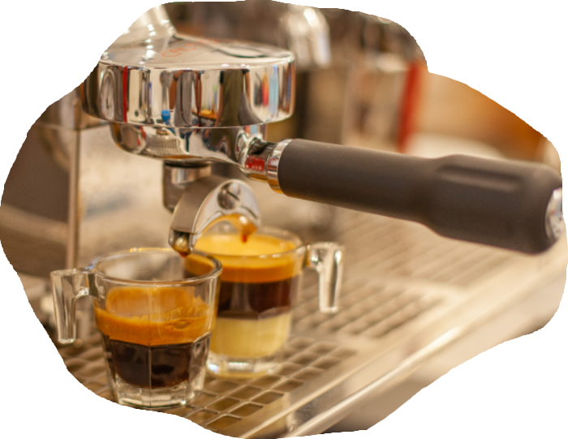

Single Post

Tentang Kopi Sanger
By BaristaKopi Sanger Khas Aceh - Selain dikenal dengan daerah yang berpegang teguh pada syariat Islam, Nangroe Aceh Darussalam (NAD) juga terkenal sebagai daerah penghasil kopi tingkat dunia, yakni kopi gayo.
Masyarakat Aceh sudah sangat melekat dengan budaya minum kopi. Maka jangan heran ketika kamu berkunjung ke Aceh, kamu akan mendapati banyak kedai-kedai kopi dengan cita rasanya tersendiri. Dari sekian banyak racikan kopi, ada satu kopi special khas Aceh yang tidak boleh ketinggalan untuk kamu cicipi saat berkunjung ke Aceh, yaitu Kopi Sanger.
back to blog